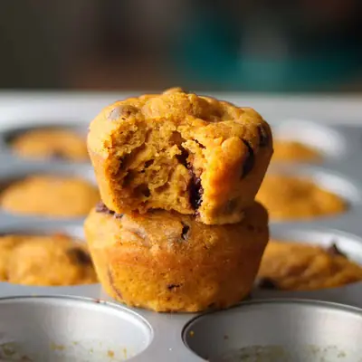

Healthy Pumpkin Muffins

Ingredients
- 1 cup canned pumpkin (240g)
- 2 eggs
- 1/3 cup maple syrup
- 1/4 cup unsalted butter, melted
- 1/2 cup whole milk (or non-dairy alternative)
- 1 teaspoon vanilla extract
- 1 3/4 cups white whole wheat flour (215g)
- 1 teaspoon baking powder
- 1/2 teaspoon baking soda
- 1/4 teaspoon salt
- 2 teaspoons pumpkin pie spice
- 3/4 cup semi-sweet chocolate chips (optional)
Steps
- Preheat the oven to 350°F (175°C) and lightly grease or line a 12-cup muffin pan.
- In a large bowl, whisk together the pumpkin puree, eggs, maple syrup, melted butter, milk, and vanilla until smooth.
- In a separate bowl, stir together the flour, baking powder, baking soda, salt, and pumpkin pie spice.
- Add the dry ingredients to the wet ingredients and gently stir until just combined. Do not overmix! If using, fold in the chocolate chips (or dried fruit/nuts).
- Divide the batter evenly among the muffin cups, filling each about ¾ full. Bake for 18–22 minutes, or until a toothpick inserted into the center comes out clean.
- Let cool in the pan for 5 minutes, then transfer to a wire rack to cool completely.
Recipe by Min Kwon · Kidfriendly Meals, from MJ and Hungryman. Saved here for personal use; the original has the full notes, tips and photos. Open original